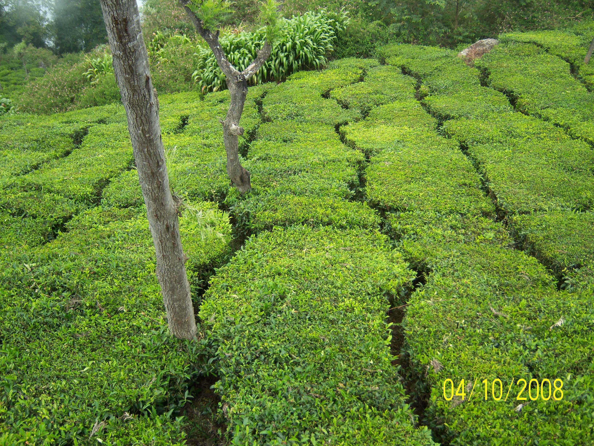

Tea
Bold, malty Assam teas sourced directly from select gardens. Orthodox and CTC varieties that reflect the soil, climate, and craftsmanship of the region.
Single-origin tea, herbs, and spices — grown, harvested, and curated in Assam.
Bold, malty Assam teas sourced directly from select gardens. Orthodox and CTC varieties that reflect the soil, climate, and craftsmanship of the region.

Indigenous herbs traditionally used for wellness and cuisine. Carefully harvested, minimally processed, and naturally potent.

Native spices of Assam including world-renowned Bhut Jolokia. Sun-dried, oil-rich, and sourced in small batches.
Assam’s biodiversity, rainfall, and fertile plains create flavors that cannot be replicated elsewhere. Assam Origin exists to preserve this authenticity — from farm to consumer.